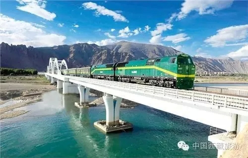

西藏日报

8月17日，自治区旅游发展委员会副主任、巡视员王松平主持召开媒体与旅游企业见面会，按照边巴扎西副主席的指示批示精神，安排部署了旅游企业标准化服务深度采访报道工作。 为贯彻落实全区旅游服务标准化建设年各项工作任务，进一步落地实施《全区旅游服务标准化建设年和景区精品化宣传工作实施方案》，切实加强正面宣传引导，促进媒体与企业之间的相互联动合作。近二个月来，西藏日报、西藏电视台、西藏人民广播电台等自治区主流媒体以及中国西藏新闻网、西藏旅游网、西藏旅游杂志等围绕全区旅游服务标准化建设年和景区精品化宣传工作，开展了“旅游服务标准化建设年和景区精品化推进年——企业在行动”专栏等报道方式，共进行了50余篇各类报道，为建设年活动起到了推波助澜的作用，旅游服务标准化已成了旅游行业的共同遵循的原则。 会上，各旅游企业与媒体就标准化建设年之企业在行动有关内容进行了充分交流。通过此次见面会，媒体对广大旅游企业在标准化建设工作当中的具体实践，有效做法，好的经验有了更进一步的认识，并明确了下一步宣传工作的方向和重点。部分旅游企业的典型做法将在近期以对镜宣传，文字深入报道等方式在各大媒体连续刊载。 见面会上，大家还就做好藏博会“服务标准化与旅游产业提升：中国西藏旅游论坛”的工作进行了交流探讨，为论坛的举行做了蓄力准备。